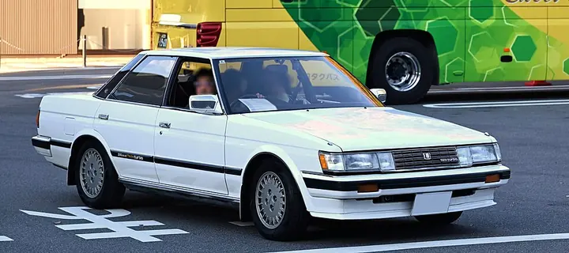
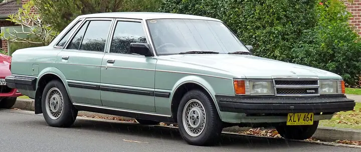
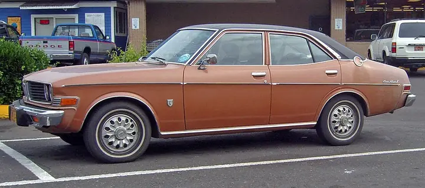

Toyota Mark II
Ninth generation (X110; 2000) · 2000–2007
Abstract
This generation of the Toyota Mark II was built October 2000 – October 2004 (sedan) in Japan: Kanegasaki, Iwate (Kanto Auto Works). Body styles: 4-door sedan. Layout: Front engine, rear-wheel drive.


1Specifications
| Production | October 2000 – October 2004 (sedan)January 2002 – June 2007 (wagon) |
|---|---|
| Assembly | Japan: Kanegasaki, Iwate (Kanto Auto Works) |
| Body style | 4-door sedan |
| Layout | Front engine, rear-wheel driveFront engine, all-wheel drive |
| Engine | 2.0 L 1G-FE petrol I62.5 L 1JZ-GE petrol I62.5 L 1JZ-FSE direct inject petrol I62.5 L 1JZ-GTE turbocharged petrol I6 |
| Wheelbase | 2780 mm |
| Length | 4735 mm (sedan) |
| Width | 1760 mm (sedan) |
| Height | 1460 mm (sedan) |
| Weight | 1390 - 1530 kg (sedan) |
| Related | Toyota Mark II BlitToyota VerossaLexus ISToyota BrevisToyota ProgrèsToyota Origin |
2Versions
- Mark II Blit (X110; 2002)
3Previous generations

_(cropped).jpg){kind=link}




_GL_sedan_01.jpg){kind=link}




4Generation by generation
Length +10% from the first to the last
T60 19684,295 mm
X10 19724,325 mm
X30 19764,615 mm
X50 19804,480 mm
X70 19844,650 mm
X80 19884,690 mm
X90 19924,750 mm
X100 19964,760 mm
X110 20004,735 mm
Weight +46% from the first to the last
T60 1968950 kg
X10 19721,080 kg
X30 19761,065 kg
X50 19801,055 kg
X70 19841,090 kg
X80 19881,170 kg
X90 19921,250 kg
X100 19961,390 kg
X110 20001,390 kg